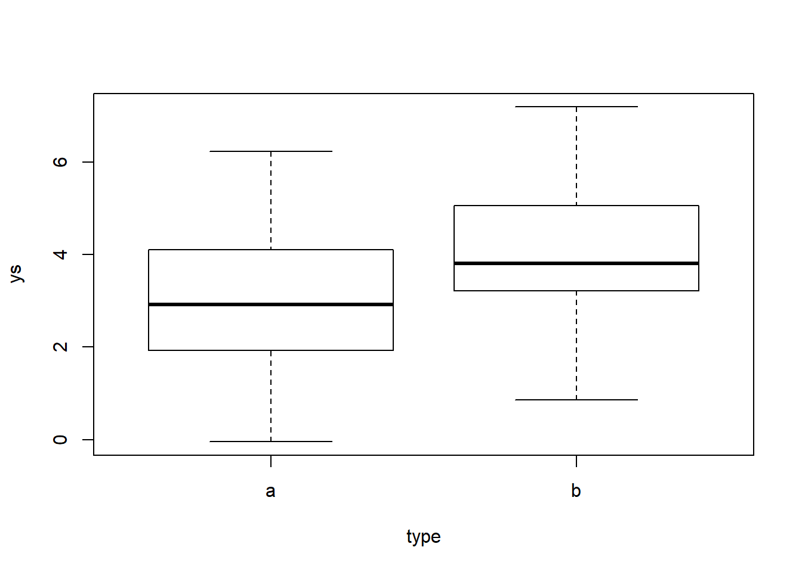
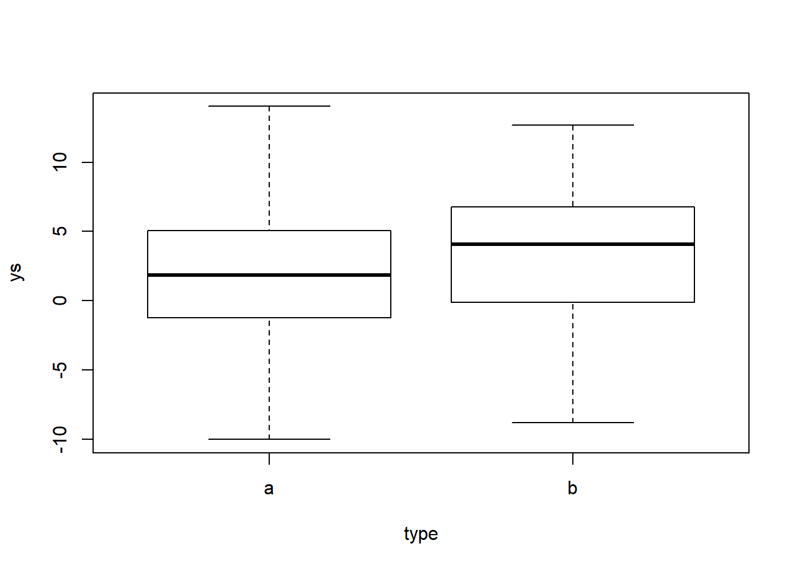
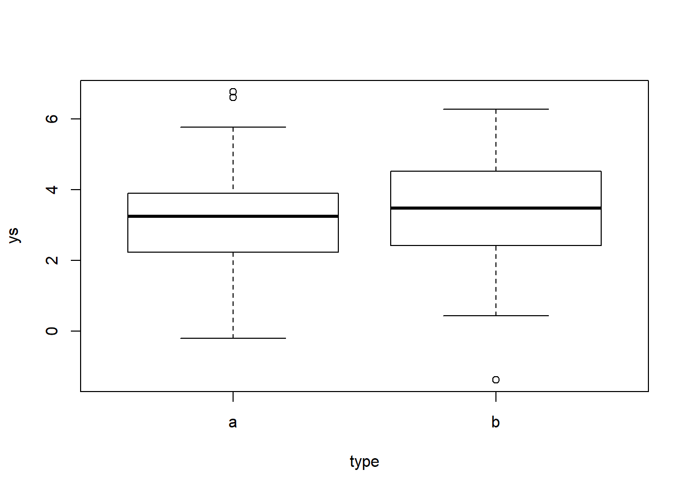
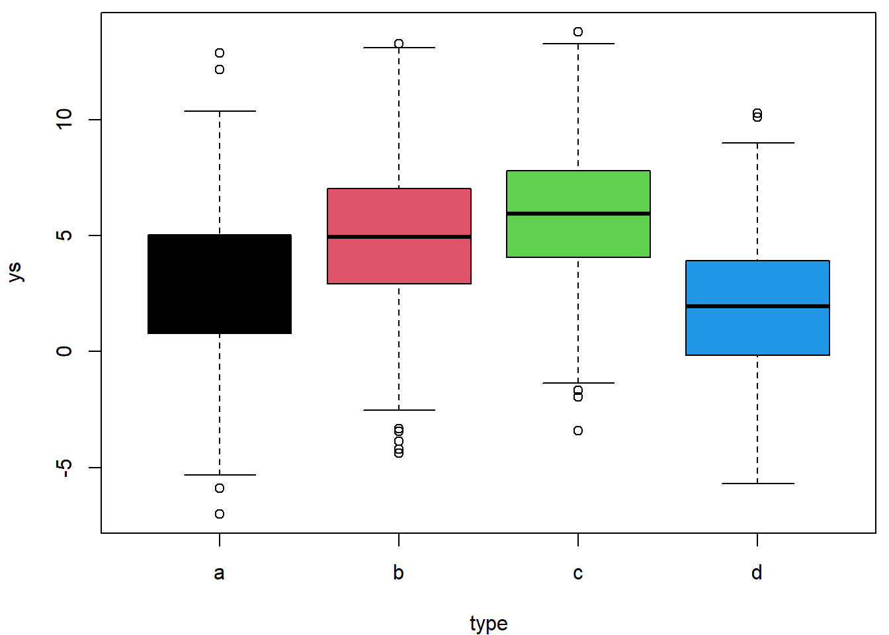
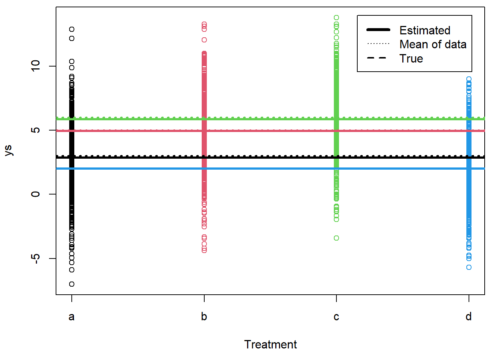
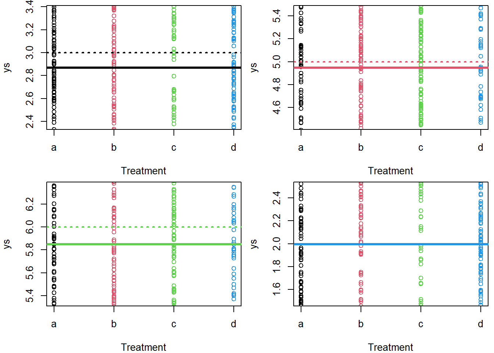

Chapter 10 Class 8 20 10 2020 - t-test and ANOVA are just linear models
The objective of this chapter is to explore different regression models and to see how they relate to statistical procedures one might not at first associate with a regression, when in fact, they are just special cases of a standard linear models, i.e. special cases of regression models.
10.1 The t-test
While we did not do the t-test in class, this is useful because it allows you to see how a simple t-test is just a linear model too, and acts as a building block for the next examples. The two sample t-test allows us to test the null hypothesis that two samples have the same mean.
Create some data
#Making up a t-test
#making sure everyone gets the same results
set.seed(980)Then we define the sample size and the number of treatments
#define sample size
n=100
#define treatments
tr=c("a","b")
#how many treatments - 2 for a t test
ntr=length(tr)
#balanced design
n.by.tr=n/ntrNow, we can simulate some data. First, the treatments
type=as.factor(rep(tr,each=n.by.tr))
cores=rep(1:ntr,each=n.by.tr)Then we define the means by treatment - note that they are different, so the null hypothesis in the t-test, that the mean of a is equal to the mean of b, is known to be false in this case.
#define 4 means
ms=c(3,4)Then, the key part, the response variable, with a different mean by treatment. Note the use of the ifelse function, which evaluates its first argument and then assigns the value of its second argument if the first is true or the value of the second if its first argument is false. An example
ifelse(3>4,55,77)## [1] 77ifelse(3<4,55,77)## [1] 55So now, generate the response data
ys=ifelse(type=="a",ms[1],ms[2])+rnorm(n,0,1.5)Look at the data
plot(ys~type)
Now, we can run the usual t-test
t.test(ys~type)##
## Welch Two Sample t-test
##
## data: ys by type
## t = -2.8043, df = 97.475, p-value = 0.006087
## alternative hypothesis: true difference in means is not equal to 0
## 95 percent confidence interval:
## -1.4263293 -0.2441277
## sample estimates:
## mean in group a mean in group b
## 3.106656 3.941884and now we can do it the linear regression way
lm0=lm(ys~type)
summary(lm0)##
## Call:
## lm(formula = ys ~ type)
##
## Residuals:
## Min 1Q Median 3Q Max
## -3.1489 -0.9131 -0.1315 1.0295 3.2450
##
## Coefficients:
## Estimate Std. Error t value Pr(>|t|)
## (Intercept) 3.1067 0.2106 14.751 < 2e-16 ***
## typeb 0.8352 0.2978 2.804 0.00608 **
## ---
## Signif. codes: 0 '***' 0.001 '**' 0.01 '*' 0.05 '.' 0.1 ' ' 1
##
## Residual standard error: 1.489 on 98 degrees of freedom
## Multiple R-squared: 0.07428, Adjusted R-squared: 0.06484
## F-statistic: 7.864 on 1 and 98 DF, p-value: 0.006081and as you can see, we get the same result for the test statistic. It is the same thing! And we can naturally get the estimated means per group. The mean for a is just the intercept of the model. To get the mean of the group b we add the mean of group b to the intercept, as
#mean of ys under treatment a
summary(lm0)$coefficients[1]## [1] 3.106656#mean of ys under treatment b
summary(lm0)$coefficients[1]+lm0$coefficients[2]## typeb
## 3.941884This is required because in a linear model, all the other parameters associated with levels of a factor will be compared to a reference value, that of the intercept, which happens to be the mean under treatment a. Below you will see more examples of this.
Note we were able to detect the null was false, but this was because we had a decent sample size compared to the variance of the measurements and the magnitude of the true effect (the difference of the means). If we keep the sample size constant but we increase the noise or decrease the magnitude of the difference, we might not get the same result, and make a type II error!
#define 2 means
ms=c(3,4)
#increase the variance of the process
ys=ifelse(type=="a",ms[1],ms[2])+rnorm(n,0,5)Look at the data, we can see much more variation
plot(ys~type)
Now, we can run the usual t-test
t.test(ys~type)##
## Welch Two Sample t-test
##
## data: ys by type
## t = -1.3609, df = 97.949, p-value = 0.1767
## alternative hypothesis: true difference in means is not equal to 0
## 95 percent confidence interval:
## -3.2822693 0.6118174
## sample estimates:
## mean in group a mean in group b
## 2.024963 3.360189and now we can do it the linear regression way
lm0=lm(ys~type)
summary(lm0)##
## Call:
## lm(formula = ys ~ type)
##
## Residuals:
## Min 1Q Median 3Q Max
## -12.1746 -3.2719 0.2527 3.0578 12.0085
##
## Coefficients:
## Estimate Std. Error t value Pr(>|t|)
## (Intercept) 2.0250 0.6938 2.919 0.00436 **
## typeb 1.3352 0.9811 1.361 0.17667
## ---
## Signif. codes: 0 '***' 0.001 '**' 0.01 '*' 0.05 '.' 0.1 ' ' 1
##
## Residual standard error: 4.906 on 98 degrees of freedom
## Multiple R-squared: 0.01855, Adjusted R-squared: 0.008533
## F-statistic: 1.852 on 1 and 98 DF, p-value: 0.1767and as you can see, we get the same result for the test statistic, but now with a non significant test.
The same would have happened if we decreased the true difference, while keeping the original magnitude of the error
#define 2 means
ms=c(3,3.1)
#increase the variance of the process
ys=ifelse(type=="a",ms[1],ms[2])+rnorm(n,0,1.5)Look at the data, we can see again lower variation, but the difference across treatments is very small (so, hard to detect!)
plot(ys~type)
Now, we can run the usual t-test
t.test(ys~type)##
## Welch Two Sample t-test
##
## data: ys by type
## t = -0.7994, df = 97.455, p-value = 0.426
## alternative hypothesis: true difference in means is not equal to 0
## 95 percent confidence interval:
## -0.8149517 0.3469402
## sample estimates:
## mean in group a mean in group b
## 3.158868 3.392874and now we can do it the linear regression way
lm0=lm(ys~type)
summary(lm0)##
## Call:
## lm(formula = ys ~ type)
##
## Residuals:
## Min 1Q Median 3Q Max
## -4.7661 -0.9318 0.0812 0.9087 3.5981
##
## Coefficients:
## Estimate Std. Error t value Pr(>|t|)
## (Intercept) 3.1589 0.2070 15.261 <2e-16 ***
## typeb 0.2340 0.2927 0.799 0.426
## ---
## Signif. codes: 0 '***' 0.001 '**' 0.01 '*' 0.05 '.' 0.1 ' ' 1
##
## Residual standard error: 1.464 on 98 degrees of freedom
## Multiple R-squared: 0.006479, Adjusted R-squared: -0.003659
## F-statistic: 0.639 on 1 and 98 DF, p-value: 0.42610.2 ANOVA
We move on with perhaps the most famous example of a statistical test/procedure, the ANOVA. An ANOVA is nothing but a linear model, where we have a continuous response variable, which we want to explain as a function of a factor (with several levels, or treatments).
There is a slight difference in the way we can code the dummy variables that might be worth to explore (this relates to contrasts, but perhaps beyond what I want to let the students know? cf. https://www.theanalysisfactor.com/why-anova-and-linear-regression-are-the-same-analysis/).
Here we simulate a data set, beginning by making sure everyone gets the same results by using set.seed
#Making up an ANOVA
#An ANOVA
#making sure everyone gets the same results
set.seed(12345)Then we define the sample size and the number of treatments
#define sample size
n=2000
#define treatments
tr=c("a","b","c","d")
#how many treatments
ntr=length(tr)
#balanced design
n.by.tr=n/ntrnow, we can simulate some data. First, the treatments, but we also generate a independent variable that is not really used for now (xs).
#generate data
xs=runif(n,10,20)
type=as.factor(rep(tr,each=n.by.tr))
#if I wanted to recode the levels such that c was the baseline
#type=factor(type,levels = c("c","a","b","d"))
#get colors for plotting
cores=rep(1:ntr,each=n.by.tr)Then we define the means by treatment - note that they are different, so the null hypothesis in an ANOVA, that all the means are the same, is false.
#define 4 means
ms=c(3,5,6,2)Then, the key part, the response variable, with a different mean by treatment. Note the use of the ifelse function, which evaluates its first argument and then assigns the value of its second argument if the first is true or the value of the second if its first argument is false. An example
ifelse(3>4,55,77)## [1] 77ifelse(3<4,55,77)## [1] 55Note these can be used nested, leading to possible multiple outcomes, and I use that below to define 4 different means depending on the treatment of the observation
ifelse(3<4,55,ifelse(3>2,55,68))## [1] 55ifelse(3>4,55,ifelse(3>2,666,68))## [1] 666ifelse(3>4,55,ifelse(3<2,666,68))## [1] 68So now, generate the data
#ys, not a function of the xs!!!
ys=ifelse(type=="a",ms[1],ifelse(type=="b",ms[2],ifelse(type=="c",ms[3],ms[4])))+rnorm(n,0,3)We can actually look at the simulated data
par(mfrow=c(1,1),mar=c(4,4,0.5,0.5))
plot(ys~type,col=1:4)
#abline(h=ms,col=1:4)finally, we can implement the linear model and look at its summary
lm.anova=lm(ys~type)
summary(lm.anova)##
## Call:
## lm(formula = ys ~ type)
##
## Residuals:
## Min 1Q Median 3Q Max
## -9.8735 -2.0115 0.0301 2.0208 9.9976
##
## Coefficients:
## Estimate Std. Error t value Pr(>|t|)
## (Intercept) 2.8694 0.1319 21.753 < 2e-16 ***
## typeb 2.0788 0.1865 11.143 < 2e-16 ***
## typec 2.9806 0.1865 15.978 < 2e-16 ***
## typed -0.8726 0.1865 -4.678 3.09e-06 ***
## ---
## Signif. codes: 0 '***' 0.001 '**' 0.01 '*' 0.05 '.' 0.1 ' ' 1
##
## Residual standard error: 2.95 on 1996 degrees of freedom
## Multiple R-squared: 0.2163, Adjusted R-squared: 0.2151
## F-statistic: 183.6 on 3 and 1996 DF, p-value: < 2.2e-16note that, again, we can manipulate any sub-components of the created objects
#see the parameters
lm.anova$coefficients## (Intercept) typeb typec typed
## 2.8694412 2.0787628 2.9806367 -0.8726428#see the third parameter
lm.anova$coefficients[3]## typec
## 2.980637Not surprisingly, because the means were different and we had a large sample size, everything is highly significant. Note that the ANOVA test is actually presented in the regression output, and that is the corresponding F-test
summary(lm.anova)$fstatistic## value numdf dendf
## 183.6156 3.0000 1996.0000and we can use the F distribution to calculate the corresponding P-value (note that is already in the output above)
ftest=summary(lm.anova)$fstatistic[1]
df1=summary(lm.anova)$fstatistic[2]
df2=summary(lm.anova)$fstatistic[3]
pt(ftest,df1,df2)## value
## 1.402786e-131OK, this is actually the exact value, while above the value was reported as just a small value (< 2.2 \(\times\) 10\(^{-16}\)), but it is the same value, believe me!
Finally, to show (by example) this is just what the ANOVA does, we have the NAOVA itself
summary(aov(lm.anova))## Df Sum Sq Mean Sq F value Pr(>F)
## type 3 4792 1597.5 183.6 <2e-16 ***
## Residuals 1996 17365 8.7
## ---
## Signif. codes: 0 '***' 0.001 '**' 0.01 '*' 0.05 '.' 0.1 ' ' 1where everything is the same (test statistic, degrees of freedom and p-values).
Conclusion: an ANOVA is just a special case of a linear model, one where we have a continuous response variable and a factor explanatory covariate. In fact, a two way ANOVA is just the extension where we have a continuous response variable and 2 factor explanatory covariates, and, you guessed it, a three way ANOVA means we have a continuous response variable and a 3 factor explanatory covariates.
Just to finish up this example, we could now plot the true means per treatment, the estimated means per treatment
par(mfrow=c(1,1),mar=c(4,4,0.5,0.5))
plot(as.numeric(type),ys,col=as.numeric(type),xlab="Treatment",xaxt="n")
axis(1,at=1:4,letters[1:4])
#plot the estimated line for type a
abline(h=lm.anova$coefficients[1],lwd=3,col=1)
#plot the mean line for type a
abline(h=mean(ys[type=="a"]),lwd=1,col=1,lty=2)
#plot the real mean for type a
abline(h=ms[1],lwd=2,col=1,lty=3)
#and now for the other types
abline(h=lm.anova$coefficients[1]+lm.anova$coefficients[2],lwd=3,col=2)
abline(h=mean(ys[type=="b"]),lwd=1,col=2,lty=2)
#plot the real mean for type b
abline(h=ms[2],lwd=2,col=2,lty=3)
abline(h=lm.anova$coefficients[1]+lm.anova$coefficients[3],lwd=3,col=3)
abline(h=mean(ys[type=="c"]),lwd=1,col=3,lty=2)
#plot the real mean for type c
abline(h=ms[3],lwd=2,col=3,lty=3)
abline(h=lm.anova$coefficients[1]+lm.anova$coefficients[4],lwd=3,col=4)
abline(h=mean(ys[type=="d"]),lwd=1,col=4,lty=2)
#plot the real mean for type a
abline(h=ms[4],lwd=2,col=4,lty=3)
legend("topright",c("Estimated","Mean of data","True"),lwd=c(4,1,2),lty=c(1,3,2),inset=0.03)
It’s not easy to see because these overlap (large sample size, high precision) but the estimated means are really close to the real means. It’s a bit easier to see if we separate in 4 plots and zoom in on the mean of each treatment, but still the blue lines are all on top of each other, since the mean value was estimated real close to truth (truth=2, estimated = 1.9967984).
#see this in 4 plots, less blur
par(mfrow=c(2,2),mar=c(4,4,0.5,0.5))
plot(as.numeric(type),ys,col=as.numeric(type),xlab="Treatment",xaxt="n",ylim=mean(ys[type=="a"])+c(-0.5,0.5))
axis(1,at=1:4,letters[1:4])
#plot the estimated line for type a
abline(h=lm.anova$coefficients[1],lwd=3,col=1)
#plot the mean line for type a
abline(h=mean(ys[type=="a"]),lwd=1,col=1,lty=2)
#plot the real mean for type a
abline(h=ms[1],lwd=2,col=1,lty=3)
#and now for the other types
plot(as.numeric(type),ys,col=as.numeric(type),xlab="Treatment",xaxt="n",ylim=mean(ys[type=="b"])+c(-0.5,0.5))
axis(1,at=1:4,letters[1:4])
abline(h=lm.anova$coefficients[1]+lm.anova$coefficients[2],lwd=3,col=2)
abline(h=mean(ys[type=="b"]),lwd=1,col=2,lty=2)
#plot the real mean for type b
abline(h=ms[2],lwd=2,col=2,lty=3)
plot(as.numeric(type),ys,col=as.numeric(type),xlab="Treatment",xaxt="n",ylim=mean(ys[type=="c"])+c(-0.5,0.5))
axis(1,at=1:4,letters[1:4])
abline(h=lm.anova$coefficients[1]+lm.anova$coefficients[3],lwd=3,col=3)
abline(h=mean(ys[type=="c"]),lwd=1,col=3,lty=2)
#plot the real mean for type c
abline(h=ms[3],lwd=2,col=3,lty=3)
plot(as.numeric(type),ys,col=as.numeric(type),xlab="Treatment",xaxt="n",ylim=mean(ys[type=="d"])+c(-0.5,0.5))
axis(1,at=1:4,letters[1:4])
abline(h=lm.anova$coefficients[1]+lm.anova$coefficients[4],lwd=3,col=4)
abline(h=mean(ys[type=="d"]),lwd=1,col=4,lty=2)
#plot the real mean for type a
abline(h=ms[4],lwd=2,col=4,lty=3)
#legend("bottomright",c("Estimated","Mean of data","True"),lwd=c(4,1,2),lty=c(1,3,2),inset=0.05)Now we can check how we can obtain the estimated means from the actual parameters of the regression model (yes, that is what the regression does, it calculates the expected mean of the response, conditional on the treatment).
This is the estimated mean per treatment, using function tapply (very useful function to get any statistics over a variable, inside groups defined by a second variable, here the treatment)
tapply(X=ys,INDEX=type,FUN=mean)## a b c d
## 2.869441 4.948204 5.850078 1.996798and checking these are obtained from the regression coefficients. An important note. When you fit models with factors (like here), the intercept term will correspond to the mean of the reference level of the factor(s). Hence, to get the other means, you always have to sum the parameter of the corresponding level to the intercept. So we do it below
#check ANOVA is just computing the mean in each group
lm.anova$coefficients[1]## (Intercept)
## 2.869441lm.anova$coefficients[1]+lm.anova$coefficients[2]## (Intercept)
## 4.948204lm.anova$coefficients[1]+lm.anova$coefficients[3]## (Intercept)
## 5.850078lm.anova$coefficients[1]+lm.anova$coefficients[4]## (Intercept)
## 1.996798and we can see these are exactly the same values.
10.3 A two way ANOVA, and beyhond (ex Task: do it yourself!)
The dataset penguins in the package palmerpenguins is very useful to illustrate ANOVA’s. It includes body size measurements (bill length and depth, flipper length and body mass) by sex for adult foraging penguins near Palmer Station, Antarctica, for 3 different islands.
I found out about this data in this twitter post by Trevor Branch (@ TrevorABranch, https://twitter.com/TrevorABranch/status/1333844966632607745). This dataset was made as an R package by Allison Horst (yes, the same person that makes the amazing R abd RStudio related artwork that we used before, https://www.allisonhorst.com/). Here we brighten up our book with Allison’s artwork again, for a reminder that the residuals of the ANOVA should be approximately Gaussian, with constant variance! If they are not Gaussian, you might more elaborate models, like a GLM, say.
 Looking at the dataset in question, explore the two way ANOVA as a linear model, and then, we move way past beyhond that into a bit of how to interpret a multiple regression output.
Looking at the dataset in question, explore the two way ANOVA as a linear model, and then, we move way past beyhond that into a bit of how to interpret a multiple regression output.
library(palmerpenguins)
data(penguins)Just to make it easier, we remove some records of penguins for which there is no sex. Always think about what might be the impact of removing data, but here we assume these are missing at random and hence would not bias inferences.
penguins<-penguins[!is.na(penguins$sex),]Lets check how many animals we have in each treatment (a treatment is jargon for the level of a factor covariate, or for a combination of levels in a factorial experiment).
barplot(with(penguins,table(species,sex)))
Perhaps surprisingly given this is observational data, the number of animals per island is balanced across sexes. On the other hane, more animals are coming from Adelie than from Gentoo, and Chinstrap presents overall a lower number of animals.
Imagine you are researcher wanting to explain how the flipper length depends on the animal’s sex and species. Given that we have a response variable as a function of two factor covariates, an interaction plot comes in handy. This visualization, available through function interaction.plot, allows us to see how the data varies as a function of the level of multiple factors. The interaction plot below illustrates the data of the flipper length (in millimeters) as a function of sex and species.
with(penguins,interaction.plot(x.factor=species,trace.factor=sex,response=flipper_length_mm),ylab="Flipper length (mm)")
Looking at this plot tells us little about whether the two variables are significant or not, because we do not really have a notion of variability associated with it. But it does seem like size might be different by sex and by species, with males being apparently larger than females, and animals from Gentoo being considerably larger than those from Adelie and Chinstrap. There do not seem to be strong interactions, but whether possible interactions are present or not remains to be seen. If the lines are parallel then there are by definition no interactions, i.e., the effect of a variable does not depend on the effect of another, and vice versa. The problem is that looking at the plot alone tells us nothing about how much those lines deviate from being parallel or not.
Note that strictly the interaction plot needs to be interpreted with care because the lines are not in any way supposed to be taken as if the relationship is continous. The slope of the lines dows give us however an idea about the differences between the different treatments.
We can actually look at the observation in each of the treatments (i.e. combinations of sex and island)
par(mar=c(10,4,0,0))
with(penguins,boxplot(flipper_length_mm ~ species + sex,las=2,xlab="",col=c(1,2,3,1,2,3)))
This plot does allow us to see the variability of the data, and it is likely that several terms will be considered statistically significant. We can implement the linear model that corresponds to the two way ANOVA to formally test that
lm2wayANOVA<-lm(flipper_length_mm~species+sex,data=penguins)
summary(lm2wayANOVA)##
## Call:
## lm(formula = flipper_length_mm ~ species + sex, data = penguins)
##
## Residuals:
## Min 1Q Median 3Q Max
## -15.5278 -3.7239 0.2761 3.4722 16.4722
##
## Coefficients:
## Estimate Std. Error t value Pr(>|t|)
## (Intercept) 186.6777 0.5684 328.437 < 2e-16 ***
## speciesChinstrap 5.7208 0.8407 6.805 4.79e-11 ***
## speciesGentoo 27.0462 0.7072 38.243 < 2e-16 ***
## sexmale 6.8502 0.6276 10.914 < 2e-16 ***
## ---
## Signif. codes: 0 '***' 0.001 '**' 0.01 '*' 0.05 '.' 0.1 ' ' 1
##
## Residual standard error: 5.726 on 329 degrees of freedom
## Multiple R-squared: 0.8346, Adjusted R-squared: 0.8331
## F-statistic: 553.4 on 3 and 329 DF, p-value: < 2.2e-16we can actually implement this same model as a standard ANOVA
summary(aov(lm2wayANOVA))## Df Sum Sq Mean Sq F value Pr(>F)
## species 2 50526 25263 770.5 <2e-16 ***
## sex 1 3906 3906 119.1 <2e-16 ***
## Residuals 329 10787 33
## ---
## Signif. codes: 0 '***' 0.001 '**' 0.01 '*' 0.05 '.' 0.1 ' ' 1and even conduct post hoc comparisons
TukeyHSD(aov(lm2wayANOVA))## Tukey multiple comparisons of means
## 95% family-wise confidence level
##
## Fit: aov(formula = lm2wayANOVA)
##
## $species
## diff lwr upr p adj
## Chinstrap-Adelie 5.72079 3.741515 7.700065 0
## Gentoo-Adelie 27.13255 25.467597 28.797512 0
## Gentoo-Chinstrap 21.41176 19.362382 23.461147 0
##
## $sex
## diff lwr upr p adj
## male-female 6.849169 5.61456 8.083779 0Everything is statistically significant from everything else, but what does it all mean? In fact, the two way ANOVA is just a really fancy way of estimating the mean in each one of the 6 treatments, while assuming a constant variance (since we are using a simple linear model). The coeficiet estimates are these
coefs<-coef(lm2wayANOVA)
coefs## (Intercept) speciesChinstrap speciesGentoo sexmale
## 186.677655 5.720790 27.046208 6.850169Therefore, the estimate of the mean of the flipper for a female penguin from Adelie island is (just the intercept!)
as.numeric(coefs[1])## [1] 186.6777for a male in Adelie you need to add the male coefficient
as.numeric(coefs[1]+coefs[4])## [1] 193.5278for a female in Chinstrap and in Gentoo their respective island parameters
as.numeric(coefs[1]+coefs[2])## [1] 192.3984as.numeric(coefs[1]+coefs[3])## [1] 213.7239and for the males in these two islands just need to add the male effect, respectively
as.numeric(coefs[1]+coefs[2]+coefs[4])## [1] 199.2486as.numeric(coefs[1]+coefs[3]+coefs[4])## [1] 220.574We can contrast these with the empirical mean in each group. These are given by
with(penguins,tapply(X=flipper_length_mm,INDEX=paste0(species,sex),mean))## Adeliefemale Adeliemale Chinstrapfemale Chinstrapmale Gentoofemale
## 187.7945 192.4110 191.7353 199.9118 212.7069
## Gentoomale
## 221.5410The minor differences in the estimated values for the means arise given that the number of animals per group are not perfectly balanced. Hence these are simply slightly different estimators of the same quantities, the treatment means. If the sample size per group were exactly the same these would coincide exactly (challenge: show that with a simulation!).
We could now formally assess whether the interaction term was required, in other words, if the influence of sex and species on the length of the flipper is independent or the effect of one variable depends on the level of the other. This is implemented as
lm2wayANOVA.I<-lm(flipper_length_mm~species+sex+species:sex,data=penguins)
summary(lm2wayANOVA.I)##
## Call:
## lm(formula = flipper_length_mm ~ species + sex + species:sex,
## data = penguins)
##
## Residuals:
## Min 1Q Median 3Q Max
## -15.7945 -3.4110 0.0882 3.4590 17.5890
##
## Coefficients:
## Estimate Std. Error t value Pr(>|t|)
## (Intercept) 187.7945 0.6619 283.721 < 2e-16 ***
## speciesChinstrap 3.9408 1.1742 3.356 0.000884 ***
## speciesGentoo 24.9124 0.9947 25.044 < 2e-16 ***
## sexmale 4.6164 0.9361 4.932 1.3e-06 ***
## speciesChinstrap:sexmale 3.5600 1.6606 2.144 0.032782 *
## speciesGentoo:sexmale 4.2176 1.3971 3.019 0.002737 **
## ---
## Signif. codes: 0 '***' 0.001 '**' 0.01 '*' 0.05 '.' 0.1 ' ' 1
##
## Residual standard error: 5.655 on 327 degrees of freedom
## Multiple R-squared: 0.8396, Adjusted R-squared: 0.8372
## F-statistic: 342.4 on 5 and 327 DF, p-value: < 2.2e-16Note that in an R model formula, y~x*z is a shortcut for y~x+z+x:z, i.e. a model with both main effects, x and z, and the interaction term between x and z.
Considering the usual significance levels, the interaction term is significant
summary(aov(lm2wayANOVA.I))## Df Sum Sq Mean Sq F value Pr(>F)
## species 2 50526 25263 789.912 < 2e-16 ***
## sex 1 3906 3906 122.119 < 2e-16 ***
## species:sex 2 329 165 5.144 0.00631 **
## Residuals 327 10458 32
## ---
## Signif. codes: 0 '***' 0.001 '**' 0.01 '*' 0.05 '.' 0.1 ' ' 1The interpretation is as follows, and was naturally apparent in the interaction plot above. The length of the flipper depends on sex (males are larger) and species (Gentoo larger than Chinstrap larger than Adelie), but the interaction means that the difference between males and females in Adelie is actually smaller than that in Chinstrap and Gentoo.
And now we’ve done all this, let’s jump a few steps forward and think about all this in an integrated way. This dataset contains also the weight of the penguins (body_mass_g). Let’s see how all the other variables explain those weights
summary(lm(body_mass_g~.,data=penguins))##
## Call:
## lm(formula = body_mass_g ~ ., data = penguins)
##
## Residuals:
## Min 1Q Median 3Q Max
## -809.70 -180.87 -6.25 176.76 864.22
##
## Coefficients:
## Estimate Std. Error t value Pr(>|t|)
## (Intercept) 84087.945 41912.019 2.006 0.04566 *
## speciesChinstrap -282.539 88.790 -3.182 0.00160 **
## speciesGentoo 890.958 144.563 6.163 2.12e-09 ***
## islandDream -21.180 58.390 -0.363 0.71704
## islandTorgersen -58.777 60.852 -0.966 0.33482
## bill_length_mm 18.964 7.112 2.667 0.00805 **
## bill_depth_mm 60.798 20.002 3.040 0.00256 **
## flipper_length_mm 18.504 3.128 5.915 8.46e-09 ***
## sexmale 378.977 48.074 7.883 4.95e-14 ***
## year -42.785 20.949 -2.042 0.04194 *
## ---
## Signif. codes: 0 '***' 0.001 '**' 0.01 '*' 0.05 '.' 0.1 ' ' 1
##
## Residual standard error: 286.5 on 323 degrees of freedom
## Multiple R-squared: 0.8768, Adjusted R-squared: 0.8734
## F-statistic: 255.4 on 9 and 323 DF, p-value: < 2.2e-16Interestingly, but not surprisingly, everything seems to be relevant to explain the weights of the animals, except, the islands they come from. It makes sense, given we know the species, sex and some measurements on beak and flippers, we can predict the weight really well. But now, the cautionary tale… what if we didn’t record all this, and we only had measurements from different islands
summary(lm(body_mass_g~island,data=penguins))##
## Call:
## lm(formula = body_mass_g ~ island, data = penguins)
##
## Residuals:
## Min 1Q Median 3Q Max
## -1869.17 -368.90 5.83 431.10 1580.83
##
## Coefficients:
## Estimate Std. Error t value Pr(>|t|)
## (Intercept) 4719.17 49.45 95.438 <2e-16 ***
## islandDream -1000.27 75.40 -13.266 <2e-16 ***
## islandTorgersen -1010.66 104.52 -9.669 <2e-16 ***
## ---
## Signif. codes: 0 '***' 0.001 '**' 0.01 '*' 0.05 '.' 0.1 ' ' 1
##
## Residual standard error: 631.3 on 330 degrees of freedom
## Multiple R-squared: 0.389, Adjusted R-squared: 0.3853
## F-statistic: 105.1 on 2 and 330 DF, p-value: < 2.2e-16Wow!?! So actually, island is very important to explain the weights… or is it. It actually is not. The truth is probably above. Other things explain the weights, namely sex and species, as we saw above.
But since different islands might have different compositions in terms of sex ratio and species, and hence, if we do not have those true drivers of weight variation, and only know the island form where each penguin came from, we might believe the differences are across islands. In some sence they are, but really mediated by the other covariates.
This is a cautionary tale about interpreting data from ecological studies, typically observational studies, where the balance across unmeasured variables might induce patterns that do not exist.